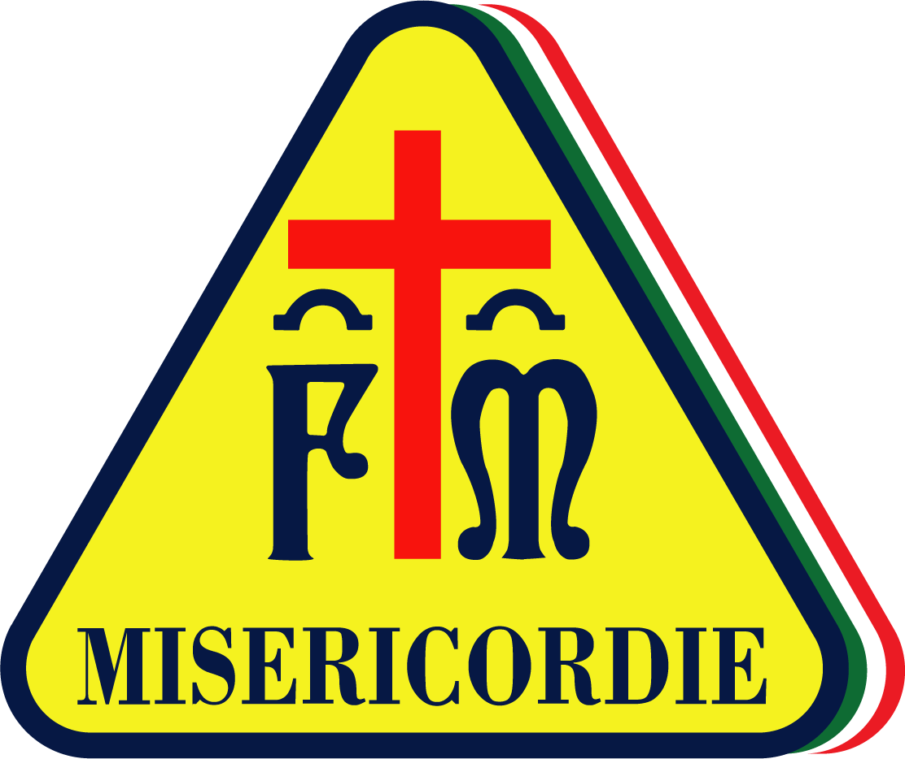

Intervista un nonno, una nonna o un'altra persona anziana che conosci. Fatti raccontare come si chiedeva aiuto quando era piccola e scrivi le sue risposte sulle righe.
Da piccolo o piccola avevi il telefono in casa? Se no, come si telefonava?
Se qualcuno stava male, chi si chiamava? Come arrivavano il medico o l'ambulanza?
Chi aiutava i vicini di casa quando avevano bisogno? In che modo?
Raccontami una volta in cui qualcuno ti ha aiutato, oppure tu hai aiutato qualcuno.
Una cosa che è cambiata:
Oggi basta un numero: il 112. È gratis, risponde giorno e notte e si può chiamare anche da un telefono senza credito.
Aiutarsi fra vicini è una cosa antica. Le Misericordie sono nate a Firenze nel 1244, quasi 800 anni fa: i volontari portavano i malati all'ospedale. La Misericordia di Ariccia è nata nel 1994 e aiuta ancora oggi le persone del paese. Ma in un'emergenza si chiama sempre il 112.
L'intervista è pensata per le classi terza, quarta e quinta. Il bambino ascolta come si chiedeva aiuto un tempo e lo confronta con oggi. Al centro ci sono il telefono, i vicini e il gesto di aiutare, non i dettagli di malattie o incidenti.
Si scrive solo il nome della persona intervistata, mai il cognome, l'indirizzo o altri dati. Niente foto, video o registrazioni senza il permesso della persona intervistata e della famiglia del bambino. Prima di esporre le schede, chiedete. La persona può non rispondere o fermarsi quando vuole.
Non tutti i bambini hanno i nonni vicino; qualcuno può averne perso uno da poco. Va bene qualunque adulto che il bambino conosce: un vicino, un parente, una persona del quartiere. Oppure si intervista insieme una persona invitata in classe, o si inventa un racconto insieme. Nessuno deve sentirsi escluso.
Sulla linea del tempo la classe mette le risposte delle interviste («quando la nonna era piccola il 112 non c'era») e poi ripete che cosa vale oggi: il 112 è gratuito, risponde 24 ore su 24, si chiama anche senza credito e solo per un pericolo vero. Per approfondire: le slide «Il 112 e il piccolo soccorritore».
Fonti, verificate il 20/11/2026: Regione Lazio, Emergenza 112 (comunicazione.regione.lazio.it/112) e notizia «Inaugurata la nuova sala del Numero Unico Emergenza 112»; DPR 27 marzo 1992, Gazzetta Ufficiale n. 76 del 31 marzo 1992; Confederazione Nazionale delle Misericordie d'Italia, Chi siamo; Misericordia di Firenze, Chi siamo; legge 20 agosto 2019, n. 92, articolo 3 (Normattiva). Sul sito: www.misericordia-ariccia.it/dossier/storia-delle-misericordie/ e /dossier/chiamare-il-112/.